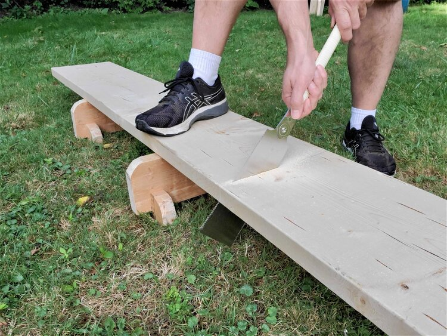

More of an And/Or Situation
From everything written here, one might assume woodworkers to be rigid traditionalists, each one siloed away in their little universe of tools and techniques. Of course, that just isn't the case.
In his book on tools, Toshio Odate stresses vise-less work-holding, where simple stops and the workman's body keep the wood steady. Reading this book, one would think the master had no need for some clunky Western vise to hold work in an iron grip. But Odate's book on making traditional shoji screens tells a different story. The pictures of this book show Odate using a cast-iron face vise to hold work for resawing as well as a small machinist's vice to grip parts for delicate work. Even Odate, ever the traditionalist, sees the use of the screw-vise because vises are just useful. For many operations the steadiness of a good vise simply cannot be beat.

While every woodworking tradition has all the tools and fixtures that it needs, some inventions are just better. Every style has one or two tools that are more accurate, more ergonomic, or more effective. I'm mostly a Western tool guy, but I can hardly believe the versatility of my Ryoba. This single saw handles big rips, and fine cross cuts. It's delicate enough for dovetails (foreals) and yet it flexes for flush-cutting. While the Ryoba may not be better than Western saws for any of these operations, there isn't a single Western tool that can do so many things so well.